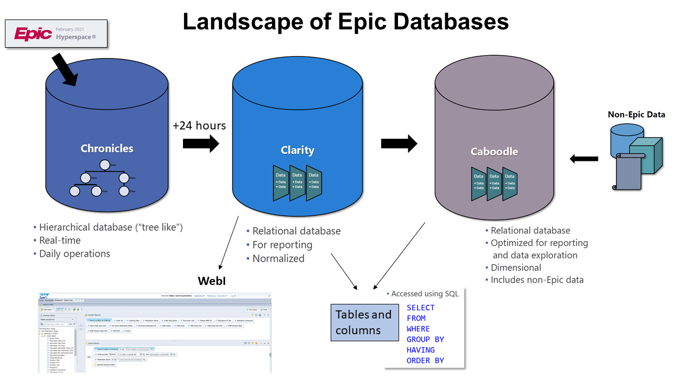

Data Support for Swedish Pharmacy Residents
Jack B. Huber, Ph.D.
May 2022
Purpose of this Document
The purpose of this document is to assemble some advice and resources to support Swedish Pharmacy residents in their journey from project proposal to a completed research project.
Planning your Project
The causal logic of your project
Fundamentally, the resident research project is an effort to gather causal evidence for the claim that a particular treatment or way of utilizing medicine “worked” by being more effective than a rival or pre-existing treatment. To plan data collection for the strongest causal evidence is the purpose of research design (Campbell and Stanley 1963).
The ideal research design would be a pure experiment with random assignment. The resident would randomly assign patients to treatment and control conditions, then compare outcomes following treatment. In such a scenario the resident could attribute any significant difference in outcomes to the treatment because the groups would differ only by chance in all other ways. Any pre-existing differences would be statistically insignificant.
Because the resident cannot randomly assign patients to conditions going forward, the project falls under the category of quasi-experiment. This means it is more vulnerable to confounding explanations of any difference in outcomes.
The resident research project will culminate in a comparison between two groups: a pre-implementation group and a post-implementation group. One difference between the groups is time, and recent history has made a big difference. Compare a pre-implementation group from the onset of the pandemic with a high incidence of COVID-19 to a more recent post-implementation group with much lower incidence of the virus. This difference between the two groups in COVID-19 infection may combine with the difference in drug dosing to influence treatment outcomes. This difference in COVID-19 infection could therefore be a confound.
The point is to clarify:
- What is the outcome to improve? This is the dependent variable.
- What is the difference in treatment intended to cause the improvement in the post-implementation group? This is the independent variable.
- All other variables are control variables. They should differ only by chance. If there is a noticeable pre-existing difference, and the level of that factor in one group affects the outcome, it is a confound.
How many patients?
Possibly the most pressing question for resident research projects is: How many patients do I need? The resident research project will culiminate in a series of comparisons between the pre-implementation and post-implementation groups. Outcomes of the two samples will differ by at least some quantity. The resident researcher expresses this difference as an effect, like this:
Assume that this effect suggests more favorable outcomes for the post-implementation group. This effect raises several questions:
- How do we evaluate this effect?
- Could we attribute it to chance? (because it would be very unlikely for both groups to have exactly the same outcomes)
- Or is it larger than that?
In statistical terms, this is a question of statistical power. Power is the ability to isolate a treatment effect when it really does exist (Cohen 1988). Power is a function of effect size, sample size, and statistical significance. In order to decide on a number of patients we need to have a sense of what size of effect we want to reliably detect.

Power Analysis
This a plot of power rates against these other variables. A large effect (r ~ 0.5) is detectable with a sample of any size. But only large samples have the power to detect a statistically significant (p < .05) small correlation (r = 0.1).
Collecting your Data
Data Sources
For collecting data from Epic, it might be helpful to have a sense of the landscape of its different databases. There are three primary databases:

Chronicles. This is the database that is collecting data from Hyperspace in real time. For reporting, Reporting Workbench pulls data directly from Chronicles, but it is otherwise not designed very well for historical reporting.
Clarity. This is the primary relational database for reporting Epic data. Through a nightly process known as ETL (“extract-transform-load”), Clarity extracts data from Chronicles and stores it in a thousand bazillion tables (think “spreadsheets”). To pull data for a report from Clarity is to identify the correct tables and fields and to write a SQL query to join the tables, apply the appropriate selection criteria, and report the appropriate fields.
Caboodle. This a relatively new relational database that functions essentially the same as Clarity but is designed to be much easier to use. Caboodle uses fewer tables derived from myriad Clarity tables which vastly simplifies the work and complexity of writing a SQL query. The down side is not all Clarity data are in Caboodle.
Granularity of data
Granularity means two related things. One is the size of the data point which is to say what context it provides for other, smaller, data points. The other is, essentially this question: What does a row in the spreadsheet mean? There are several different levels of granularity:
Patient-level data. A patient has a unique ID number: the MRN. No two patients have the same MRN. When it comes to mining Epic data for the research project, the patient list is perhaps the most important: the resident needs a “patient list”. When it comes to data mining, the patient “level” is context to more granular data in the sense that a patient can have multiple encounters - and thus multiple Encounter CSNs “within” the same Patient MRN.
Encounter-level data. The unique Epic ID number for the encounter is the CSN. The encounter is context to more granular data such as a treatment regimen of a particular medicine. Multiple drug administrations can occur “within” an encounter CSN.
Medication administration level data. This is possibly the lowest level and the most granular data. In Caboodle, each administration of a medicine has a unique ID number and is time-stamped. My queries to date have been for counts of medicine administrations, or firsts, lasts, minimums and maximum doses within a hospital encounter or ICU stay.
Lab results level data. Lab data is similar to medicine administration data because, again in Caboodle, each lab result is has its own unique ID number and is time-stamped. There can be a great many lab results within a hospital encounter. My queries to date have been for counts of lab results, or firsts, lasts, minimums and maximum values within a hospital encounter or ICU stay.
The resident data collection form is designed for patient level data; each row in the spreadsheet captures the experience of a hospital encounter. It can also be helpful to report the medicine administration and lab result data sorted chronologically by patient and encounter.
Advice for Data Collection and Management
Be proactive. As you begin to decide what data to collect, submit your project plan and requests for data in writing to me (Jack) as soon as possible. This is so I can have a bit of time to understand your project, do some discovery in Caboodle or Clarity, and note any questions. Then meet with me via Teams to get on the same page.
Devise a system for organizing your data. By this I mean version control. This data collection process is iterative. You will ask for data and I’ll write a SQL query that produces an Excel workbook of data. That’s one iteration. In all likelihood you’ll need a revision or two. Upon receiving your feedback I’ll edit my query and produce for you a new set of data to replace the first set. That’s the second iteration. The more iterations, the more data, the more potential for multiple versions and data overload. And I may not be able to do more than a few iterations. I can work on some best practices to help us through this. Stay tuned.
There is no substitute for chart review. Some fraction of resident research data can come from Epic data mining, but it still needs to be validated with careful chart review. And some data which are very difficult to mine or to query into the correct format may have to come from chart review.
Analyzing your Data
You have data. Congratulations! Let’s analyze!
Preparing your data for analysis
The first step is to complete a number of tasks to prepare your data for analysis. One data matrix. See the exemplar.
Choosing appropriate statistics
It is important to know the measurement level of your variables. How do you express the outcome by which to compare your pre- and post- samples? Is it…
- Mortality rate (% surviving)? In such a case you would be comparing two proportions.
- “Time to…” a therapeutic level? In such a case you would be comparing two different quantities of time.